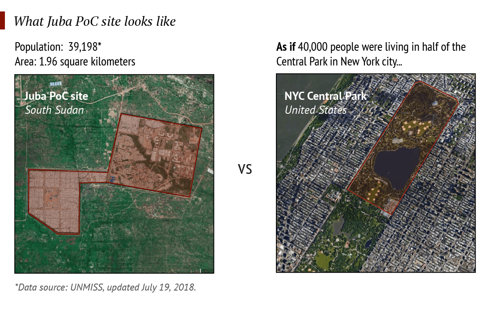

Fleeing Padeah village
Angelina is 35 years old and has three children. She is from Padeah, a small village in the northern region of Unity State. This area is one of the worst-affected by conflict since civil war broke out in December 2013 between the Government and opposition forces.
Warring parties have deliberately attacked civilians living in the area, killing thousands of people and sexually assaulting women and girls. Angelina’s husband was killed in the fighting. Attackers set houses on fire in Padeah and destroyed crops and mango trees to eliminate all food sources. Many of Angelina’s friends were raped and live in constant fear.
Angelina decides to leave Padeah in July 2017. She and her children walk 120 kilometers to a camp in the north. The journey takes about one week and is filled with danger. Abductions are common, and rape is pervasive everywhere in the country. The family has to avoid stepping on unexploded ordinance, and face the risk of being abducted or raped.


Entering and leaving the Bentiu Protection of Civilians site
The family arrives in Bentiu, the location of the UN Protection of Civilians site, but Angelina realizes they are still not safe. Women there tell her that many of them have been raped when leaving the camp to collect firewood, and some of them have been abducted just outside the gates. Sometimes families are requested to provide ransoms to kidnappers to get their daughters back. There are also reports of women being held captive and used as sex slaves.
Angelina and her children stay in the camp for several months but there is no chance of settling in the nearby village. After the signing of a ceasefire between the Government and opposition forces in December 2017, Angelina thinks that the situation will improve, and she heads back home.


From Padeah to Meer Island swamp
When Angelina gets back to Padeah, the fighting has not stopped. Violent clashes have erupted and continue through several rounds of peace negotiations. This time, Angelina and her children head south to Meer Island swamp. Over 40,000 people in total flee to hide in this area.
This second displacement is even more difficult than the first. The family has exhausted its coping mechanisms. The children have not been attending school for months. There is almost no food left – they survive by eating bulbs of wild water lilies and catching fish. On 21 February 2017, famine was declared in Leer and Mayendit counties in Central Unity State. Access to safe water remains a major challenge, with many people gathering water directly from the swamps without the means to purify it. Many people get sick. And many children – particularly boys – are forcibly recruited by the various military groups. Across the country, families start to resort to negative coping mechanism such as forcibly marrying off their daughters, to survive.
After hiding in the swamp for weeks, the family moves to a temporary protection area set up by the UN in Leer town.


A journey up the White Nile River
Due to the dire conditions in Leer county, the family decides to move south towards the capital, Juba. They have heard that there is a camp there where they can receive humanitarian assistance.
They walk to Adok Port and take a boat ride 100 kilometers to Thair Port in Panyijiar County. Angelina has family members there who share their shelter and limited food supplies with her and her children for a couple of days. Angelina then takes her family further south on a boat to reach the town of Shambe.
Angelina and her children are exhausted by the trip but have received just enough food from their relatives to be able to keep going. Even in this situation, they are considered lucky. Almost half of the country’s population is now facing acute hunger, despite a large-scale humanitarian assistance operation. Food production is sharply down because farmers have been driven off their land, or their crops have been looted or burned.


Waiting for a free boat ride from Shambe to Bor
In Shambe, Angelina and her children receive food thanks to residents who share their limited resources. They stay in the town for several days, waiting for a free boat ride to bring them to Bor town. The journey lasts 12 hours and is extremely hazardous. Angelina has heard stories of people who have drowned, and of pirates who force travelers to hand over cash and tie people up and throw them overboard when they are unable to pay.
But the fear does not stop there. Angelina is worried that her children will fall sick. Deadly cholera is reported to be widespread along the river belt, including in Juba. Fortunately, when she reaches Bor, humanitarian organizations help vaccinate the children against cholera and provide them with basic medical care.


Temporary settlement in Juba
The family resumes its journey by boat to the camp in Juba. From Bor, they stop in Gemmaiza, Terekeka, Mongalla and Gondokoro. When they finally reach Juba Port, they are told that the camp they are looking for is another 10 kilometers away. The family walks several hours in the heat and Angelina and her children are harassed and threatened as they pass through security check-points.
After a 1,000 kilometer journey, Angelina and her children are finally able to receive food and medical care from humanitarian workers. Although they face many of the same security threats as they saw in the Bentiu camp, for the first time since she left her village, Angelina can earn a little money to support her family, by selling firewood and dried grass.
